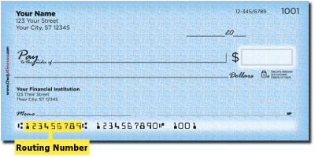

ABA Validator 1.0.3-SNAPSHOT
- Project Links About GitHub project Release notes Copyright/License
- Contribute Buy Me Beer Issues
- Developer Reports Checkstyle Report CPD Report JaCoCo Coverage JavaDocs Report JavaNCSS Report JDepend Metrics JXR XRef Report PMD Report Spotbugs Report Surefire Report Tag List Report ───── Change Log Report File Activity Report Developer Report ───── Dependency Updates Report Plugin Updates Report Property Updates Report ─────
- Project Information About Summary Dependencies Dependency Convergence Dependency Information Dependency Management Issue Management Plugins Plugin Management Source Repository Licenses 3d Party Licenses Team
ABA Routing Validator
A lightweight Java library for validating ABA Routing Transit Numbers (RTNs).
Copyright © 2026 Carda Technologies, LLC.
 [1]
[1]
🚩 Table of Contents
⚡️Overview
ABA Routing Validator is a lightweight Java library developed by Carda Technologies, LLC, for validating American Bankers Association (ABA) Routing Transit Numbers.
The library performs structural, Federal Reserve prefix, and checksum validation to help Java applications identify invalid routing numbers.
The ABA RTN number can usually (but not always) be found on the bottom left-hand corner of your personal check. The last digit of the ABA number is actually called a “checksum digit”. It's a crude hash of the first eight digits and provides an initial check for the numbers authenticity.

More information about the ABA routing transit number can be found in the Book of Knowledge: http://en.wikipedia.org/wiki/Routing_transit_number[2]
🚀 Features
- Validates nine-digit ABA Routing Transit Numbers.
- Rejects null and blank input.
- Validates routing number length.
- Requires ASCII numeric digits (
0–9). - Validates Federal Reserve routing prefixes.
- Performs the ABA checksum calculation using repeating weights of
3, 7, 1. - Provides consistent validation error codes.
- Provides descriptive error mnemonics.
- Supports exception handling with numeric error code retrieval.
- Lightweight implementation using a static utility class.
👨 Technology Stack
The following software is required to build this project:
| Software | Version | Download |
|---|---|---|
| 17.0.9 | https://docs.aws.amazon.com/corretto/latest/corretto-17-ug/downloads-list.html[3] | |
| 3.9.16 | https://maven.apache.org/download.cgi[4] |
⚙️ Installation
Maven
Add the following dependency to your project's pom.xml:
<dependency>
<groupId>com.cardatechnologies</groupId>
<artifactId>aba-route-validator</artifactId>
<version>VERSION</version>
</dependency>
Replace VERSION with the desired release version.
🏗️ Build Instructions
The POM actually has several build targets.
Build With Tests
This is the default and the one you will probably run the most.
This will compile the Jar artifact, and run the JaCoCo and Spotbugs reports.
mvn clean install
Build With Metrics Reports
This will generate the complete suite of metrics reports.
mvn -P genReports clean install site
Build Only The Jar Artifact
This will generate the final build artifact and nothing else.
mvn -P jar-only clean install-DskipTests
✅ Code Metrics Reports
Maven site reports are human-readable documentation and analysis pages generated automatically during the project's site lifecycle (triggered by the mvn site command) using the Apache Maven Site Plugin and configured reporting plugins.
The current list of reports includes:
- Checkstyle Report[5]
- CPD (Copy/Paste) Report[6]
- JaCoCo (Code Coverage) Report[7]
- JavaDocs Report[8]
- JavaNCSS Report[9]
- JDepend Report[10]
- XRef Report[11]
- PMD Report[12]
- SpotBugs Report[13]
- Surefire Report[14]
- Tag List (Todo List) Report[15]
The reporting site be located here[16].
🎨 Usage
The validator provides a static validation method.
import net.danielcarda.utils.validators.abaroutevalidator.AbaRouteValidator;
import exceptions.net.danielcarda.utils.validators.abaroutevalidator.AbaRouteValidationException;
public class Example {
public static void main(String[] args) {
String routingNumber = "021000021";
try {
boolean valid = AbaRouteValidator.validate(routingNumber);
if (valid) {
System.out.println("Valid ABA routing number.");
} else {
System.out.println("Invalid ABA checksum.");
}
} catch (AbaRouteValidationException e) {
System.out.println("Validation Error: " + e.getMessage());
System.out.println("Error Code: " + e.getErrorCode());
}
}
}
🔧 Validation Results
The validate() method returns a boolean when structural and Federal Reserve prefix validation succeeds.
| Result | Meaning |
|---|---|
true |
The routing number passes all validation checks. |
false |
The routing number has an invalid checksum. |
| Exception | The input is null, blank, incorrectly sized, contains non-ASCII digits, or has an invalid Federal Reserve prefix. |
🔧 Validation Checks
The validator performs the following checks:
- Input must not be null.
- Input must not be blank.
- Input must contain exactly nine characters.
- All characters must be ASCII digits (
0–9). - The first two digits must represent an accepted Federal Reserve routing prefix.
- The ABA checksum must be valid.
🧐 Federal Reserve Routing Prefixes
The validator recognizes the following routing prefix ranges:
| Prefix Range | Classification |
|---|---|
00–12 |
Government and Federal Reserve |
21–32 |
Thrift institutions |
61–72 |
Payment processors and clearing houses |
80 |
Traveler's checks |
🧩 Error Codes
The library defines the following validation error codes:
| Error Code | Error Mnemonic | Description |
|---|---|---|
| -1000 | aba.number.null |
Routing number is null. |
| -1001 | aba.number.blank |
Routing number is blank. |
| -1002 | aba.number.length.too.short |
Routing number is too short. |
| -1003 | aba.number.length.too.long |
Routing number is too long. |
| -1004 | aba.number.contains.non.ascii.digits |
Routing number contains non-ASCII digits. |
| -1005 | aba.number.invalid.federal.reserve.prefix |
Invalid Federal Reserve prefix. |
Exception Handling
Validation errors are represented by AbaRouteValidationException, a checked exception.
The exception provides:
getErrorCode()– Returns the numeric validation error code.getMessage()– Returns the associated error mnemonic.
Example:
try {
AbaRouteValidator.validate(routingNumber);
} catch (AbaRouteValidationException e) {
int errorCode = e.getErrorCode();
String message = e.getMessage();
}
Error Code Lookup
The ErrorCodes enumeration provides a lookup method for retrieving an error enumeration by its numeric code.
ErrorCodes error = ErrorCodes.fromErrorCode(-1002);
An IllegalArgumentException is thrown if the supplied numeric error code is not recognized.
🚧 Limitations
Passing validation does not establish that:
- A financial institution is currently operating.
- A routing number is currently active or accepted.
- A bank account exists.
- A particular bank account belongs to a particular individual or organization.
- A financial transaction can be successfully processed.
Additional verification may be required depending on the intended application.
📝 API Documentation
See the project Javadocs for complete API documentation.
⚠️ Copyright and License
This software is free to use for personal, academic, commercial, or corporate projects.
Copyright © 2015 Daniel Carda.
All Rights Reserved.
This project is licensed under the Apache License, Version 2.0[17] — see the LICENSE[17] for the specific language governing permissions and limitations under the License.
Unless required by applicable law or agreed to in writing, software distributed under the License is distributed on an “AS IS” BASIS, WITHOUT WARRANTIES OR CONDITIONS OF ANY KIND, either express or implied.
By submitting a pull request to this project, you aggree to license your contribution under the Apache license version 2.0 to this project.
👋 About the Developer
Follow this link to learn more about me:
| Media | Address |
|---|---|
| https://www.linkedin.com/in/danielcarda/[18] | |
| https://github.com/dcarda[19] | |
| https://danielcarda.net/[20] |
🤝 Contributing
Donations are always welcome! Help me out this this and other projects!
© Daniel Carda[20] 2015-2027
Licensed under Apache 2.0[22]

Thanks for visiting :thumbsup:
- [1] https://www.apache.org/licenses/LICENSE-2.0
- [2] http://en.wikipedia.org/wiki/Routing_transit_number
- [3] https://docs.aws.amazon.com/corretto/latest/corretto-17-ug/downloads-list.html
- [4] https://maven.apache.org/download.cgi
- [5] https://dcarda.github.io/aba.route.validator/checkstyle.html
- [6] https://dcarda.github.io/aba.route.validator/cpd.html
- [7] https://dcarda.github.io/aba.route.validator/jacoco-report.html
- [8] https://dcarda.github.io/aba.route.validator/javadoc-report.html
- [9] https://dcarda.github.io/aba.route.validator/javancss.html
- [10] https://dcarda.github.io/aba.route.validator/jdepend-report.html
- [11] https://dcarda.github.io/aba.route.validator/xref-report.html
- [12] https://dcarda.github.io/aba.route.validator/pmd.html
- [13] https://dcarda.github.io/aba.route.validator/spotbugs.html
- [14] https://dcarda.github.io/aba.route.validator/surefire.html
- [15] https://dcarda.github.io/aba.route.validator/taglist.html
- [16] https://dcarda.github.io/aba.route.validator/
- [17] LICENSE
- [18] https://www.linkedin.com/in/danielcarda/
- [19] https://github.com/dcarda
- [20] https://danielcarda.net/
- [21] .github/donate.md
- [22] https://choosealicense.com/licenses/apache-2.0/